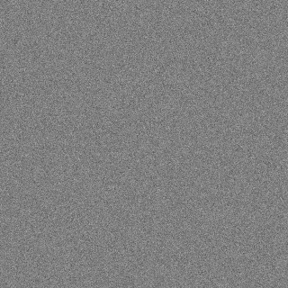
EXPERIMENT 01 / 20
Whisper grain
Very fine, quiet speckle. A subtle starting point for large backgrounds.
Texture recipe
Fine random grain, low contrast. A neutral texture tile blends into the sampled colours using soft light.
Hoea tō Waka · Colour studies
An exploration of the greens, warm sun colours and soft pinks in your illustration. Fourteen sampled colours. Twenty ways to give them a printed-paper feel.
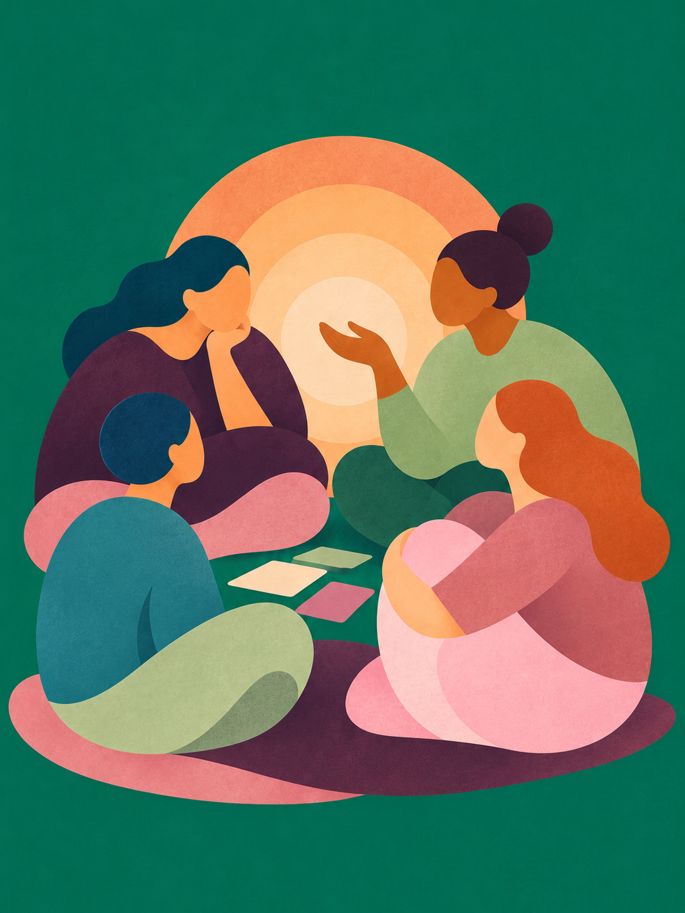
01 / The palette
These are approximate colours sampled inside the shapes, averaging out some of the grain. Click a swatch to copy its HEX value.
Download the sampled palette02 / What creates the feel?
The visible texture suggests a paper or pigment layer over simple, flat shapes. The original tool and settings cannot be identified from this image alone. These studies recreate the effect with three ingredients.
For the closest starting points, compare 03 Printed paper, 06 Layered gouache and 17 Warm paper blend.
03 / The texture collection
Each study uses the same shapes and colour strip so you can compare the surface. Switch to a single colour for a closer look, or turn texture off to see the difference.

Very fine, quiet speckle. A subtle starting point for large backgrounds.
Fine random grain, low contrast. A neutral texture tile blends into the sampled colours using soft light.
Small, softened grain with a little more body.
Fine grain softened over neighbouring pixels. A neutral texture tile blends into the sampled colours using soft light.
Fine grain layered over gentle pigment variation. A close direction for the reference.
Soft grain + low-frequency clouding. A neutral texture tile blends into the sampled colours using soft light.
Larger powdery marks, like pigment caught on a textured surface.
Medium-scale grain with a fine dust layer. A neutral texture tile blends into the sampled colours using soft light.
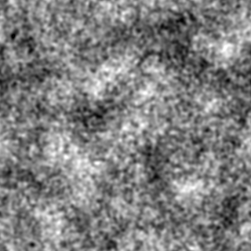
Visible paper tooth with a more uneven painted finish.
Medium grain + broad cloudy variation. A neutral texture tile blends into the sampled colours using soft light.
Soft patches beneath finer grain. One of the closest directions to try.
Fine grain + medium clouding + broad pigment blooms. A neutral texture tile blends into the sampled colours using soft light.
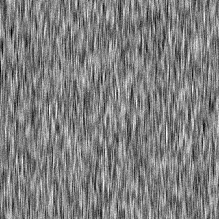
Long, subtle fibres that suggest handmade paper.
Directionally stretched noise + fine grain. A neutral texture tile blends into the sampled colours using soft light.
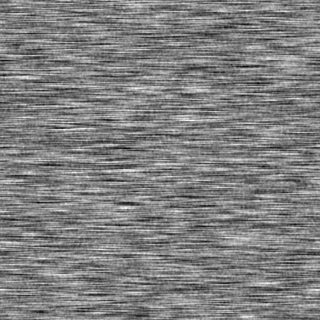
A gentle horizontal drag across the colour.
Horizontal fibre noise + softened grain. A neutral texture tile blends into the sampled colours using soft light.
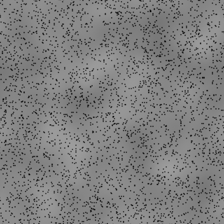
Small dark flecks, with soft variation underneath.
Sparse dark speckles + low-contrast clouding. A neutral texture tile blends into the sampled colours using soft light.
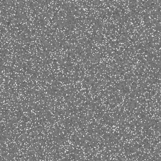
Light specks break up the colour like dry chalk.
Sparse pale speckles + soft grain. A neutral texture tile blends into the sampled colours using soft light.
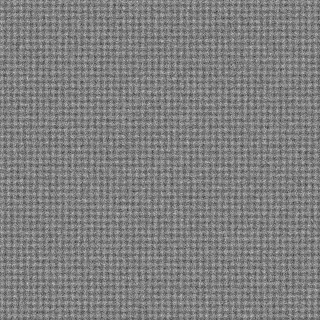
A regular woven surface with tiny irregularities.
Crossed threads + fine random grain. A neutral texture tile blends into the sampled colours using soft light.
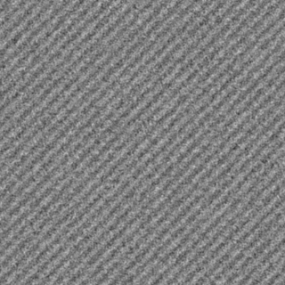
A soft diagonal rhythm, closer to print screening.
Diagonal ridges + softened grain. A neutral texture tile blends into the sampled colours using soft light.
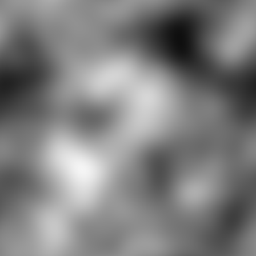
Broad, slow shifts in pigment density.
Large clouding + medium-scale tonal variation. A neutral texture tile blends into the sampled colours using soft light.
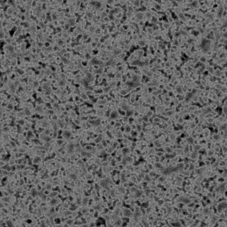
Soft indentations and heavier patches, like compressed paper.
Darkened medium-grain clusters + fine grain. A neutral texture tile blends into the sampled colours using soft light.
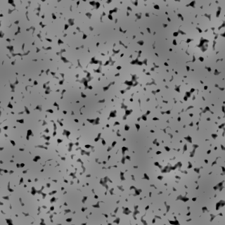
Uneven dark deposits with quieter areas between.
Thresholded pigment islands + soft clouding. A neutral texture tile blends into the sampled colours using soft light.
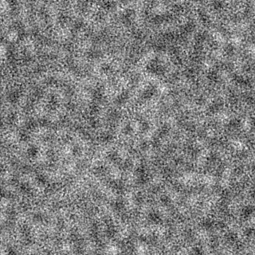
Sharper granular edges with a more worked surface.
High-frequency grain contrast + low-frequency clouding. A neutral texture tile blends into the sampled colours using soft light.
Balanced fine and broad texture. Another close reference direction.
Medium tooth + soft clouding + fine grain. A neutral texture tile blends into the sampled colours using soft light.
A mixture of short fibres and cloudy colour deposits.
Vertical fibres + clouding + fine dust. A neutral texture tile blends into the sampled colours using soft light.
Low contrast across both fine and broad texture.
Reduced fine grain + very subtle clouding. A neutral texture tile blends into the sampled colours using soft light.
The same layered approach with stronger texture throughout.
Stronger fine grain + clouding + broad pigment blooms. A neutral texture tile blends into the sampled colours using soft light.